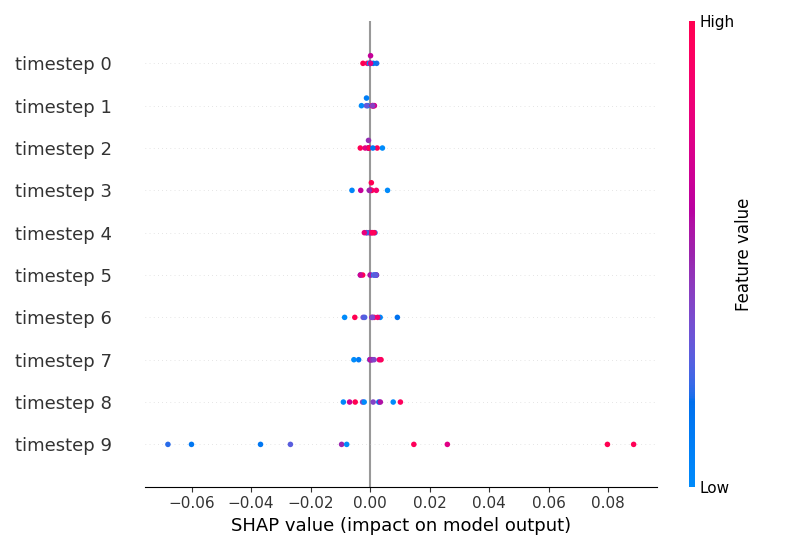

Note
Click here to download the full example code
06. Basic example
Out:
WARNING:tensorflow:From c:\users\kelda\desktop\repositories\virtualenvs\venv-py3790-psc\lib\site-packages\tensorflow\python\compat\v2_compat.py:107: disable_resource_variables (from tensorflow.python.ops.variable_scope) is deprecated and will be removed in a future version.
Instructions for updating:
non-resource variables are not supported in the long term
Shapes:
i: (100, 2)
y: (10,)
x: (10, 10, 5)
Data ((10, 10, 5)):
[[[21 38 14 27 59]
[25 78 77 5 27]
[ 4 70 61 17 82]
[89 77 12 47 30]
[20 33 20 6 2]
[92 31 52 96 53]
[94 51 56 79 57]
[70 33 85 35 94]
[59 59 9 0 54]
[33 8 13 63 27]]
[[17 16 48 31 28]
[52 89 61 60 60]
[88 61 52 46 86]
[24 65 18 0 54]
[99 21 37 73 95]
[22 63 73 70 36]
[85 90 25 14 9]
[23 50 80 74 79]
[84 49 59 3 96]
[89 57 76 62 34]]
[[26 29 78 4 92]
[38 91 17 6 30]
[ 7 32 73 47 72]
[47 70 15 90 68]
[43 19 28 44 69]
[65 6 55 87 21]
[90 58 89 24 26]
[32 92 54 21 25]
[62 60 89 68 67]
[17 18 76 87 42]]
[[18 82 92 17 63]
[61 7 31 73 13]
[21 44 84 90 30]
[28 2 11 83 96]
[15 78 15 89 81]
[18 46 24 81 98]
[28 6 44 89 9]
[ 7 81 42 24 52]
[28 90 88 99 74]
[73 79 65 61 63]]
[[84 89 11 76 80]
[15 67 5 42 91]
[11 48 33 15 69]
[41 37 23 52 59]
[50 34 65 37 45]
[61 50 55 79 25]
[49 58 85 62 82]
[ 4 82 24 9 61]
[ 9 50 36 93 85]
[36 62 56 90 77]]
[[51 51 7 94 73]
[38 77 83 76 44]
[59 80 94 97 50]
[85 39 41 86 62]
[28 11 95 72 98]
[87 34 11 40 82]
[59 55 84 47 84]
[30 34 98 10 17]
[35 74 92 17 12]
[14 77 63 96 10]]
[[41 37 94 64 96]
[79 95 34 39 84]
[94 36 29 71 96]
[43 37 67 25 34]
[49 56 82 62 46]
[45 1 60 0 9]
[77 50 74 16 23]
[82 74 5 80 37]
[ 0 81 16 64 89]
[24 69 41 14 74]]
[[23 32 37 59 11]
[60 23 79 77 30]
[14 80 39 64 75]
[50 54 58 12 57]
[51 0 71 2 76]
[47 95 36 68 62]
[25 89 52 99 8]
[18 62 31 60 72]
[23 62 86 31 3]
[46 17 17 2 84]]
[[41 66 35 86 23]
[28 31 31 21 64]
[96 43 66 49 0]
[32 28 2 5 74]
[21 18 7 8 89]
[19 29 61 35 95]
[63 78 81 63 73]
[57 99 86 25 84]
[78 79 71 50 54]
[29 63 30 44 73]]
[[34 5 27 47 81]
[24 85 68 32 12]
[16 56 69 73 81]
[81 18 73 90 97]
[68 85 61 83 99]
[ 0 83 9 18 37]
[80 43 50 17 36]
[28 55 60 51 98]
[94 75 43 75 88]
[38 6 74 48 95]]]
DataFrame (2D)
id t f0 f1 f2 f3 f4
0 0 0 21 38 14 27 59
1 0 1 25 78 77 5 27
2 0 2 4 70 61 17 82
3 0 3 89 77 12 47 30
4 0 4 20 33 20 6 2
.. .. .. .. .. .. .. ..
95 9 5 0 83 9 18 37
96 9 6 80 43 50 17 36
97 9 7 28 55 60 51 98
98 9 8 94 75 43 75 88
99 9 9 38 6 74 48 95
[100 rows x 7 columns]
Model: "sequential"
_________________________________________________________________
Layer (type) Output Shape Param #
=================================================================
lstm (LSTM) (None, 64) 17920
dense (Dense) (None, 64) 4160
dense_1 (Dense) (None, 1) 65
=================================================================
Total params: 22,145
Trainable params: 22,145
Non-trainable params: 0
_________________________________________________________________
None
Train on 10 samples
Epoch 1/16
10/10 [==============================] - ETA: 0s - loss: 0.7662 - acc: 0.3000
10/10 [==============================] - 0s 23ms/sample - loss: 0.7662 - acc: 0.3000
Epoch 2/16
10/10 [==============================] - ETA: 0s - loss: 0.7112 - acc: 0.5000
10/10 [==============================] - 0s 499us/sample - loss: 0.7112 - acc: 0.5000
Epoch 3/16
10/10 [==============================] - ETA: 0s - loss: 0.6604 - acc: 0.7000
10/10 [==============================] - 0s 399us/sample - loss: 0.6604 - acc: 0.7000
Epoch 4/16
10/10 [==============================] - ETA: 0s - loss: 0.6192 - acc: 0.8000
10/10 [==============================] - 0s 497us/sample - loss: 0.6192 - acc: 0.8000
Epoch 5/16
10/10 [==============================] - ETA: 0s - loss: 0.5858 - acc: 0.8000
10/10 [==============================] - 0s 401us/sample - loss: 0.5858 - acc: 0.8000
Epoch 6/16
10/10 [==============================] - ETA: 0s - loss: 0.5564 - acc: 0.9000
10/10 [==============================] - 0s 400us/sample - loss: 0.5564 - acc: 0.9000
Epoch 7/16
10/10 [==============================] - ETA: 0s - loss: 0.5292 - acc: 1.0000
10/10 [==============================] - 0s 302us/sample - loss: 0.5292 - acc: 1.0000
Epoch 8/16
10/10 [==============================] - ETA: 0s - loss: 0.5044 - acc: 1.0000
10/10 [==============================] - 0s 500us/sample - loss: 0.5044 - acc: 1.0000
Epoch 9/16
10/10 [==============================] - ETA: 0s - loss: 0.4811 - acc: 1.0000
10/10 [==============================] - 0s 401us/sample - loss: 0.4811 - acc: 1.0000
Epoch 10/16
10/10 [==============================] - ETA: 0s - loss: 0.4603 - acc: 1.0000
10/10 [==============================] - 0s 502us/sample - loss: 0.4603 - acc: 1.0000
Epoch 11/16
10/10 [==============================] - ETA: 0s - loss: 0.4405 - acc: 1.0000
10/10 [==============================] - 0s 498us/sample - loss: 0.4405 - acc: 1.0000
Epoch 12/16
10/10 [==============================] - ETA: 0s - loss: 0.4200 - acc: 1.0000
10/10 [==============================] - 0s 500us/sample - loss: 0.4200 - acc: 1.0000
Epoch 13/16
10/10 [==============================] - ETA: 0s - loss: 0.3995 - acc: 1.0000
10/10 [==============================] - 0s 501us/sample - loss: 0.3995 - acc: 1.0000
Epoch 14/16
10/10 [==============================] - ETA: 0s - loss: 0.3787 - acc: 1.0000
10/10 [==============================] - 0s 504us/sample - loss: 0.3787 - acc: 1.0000
Epoch 15/16
10/10 [==============================] - ETA: 0s - loss: 0.3582 - acc: 1.0000
10/10 [==============================] - 0s 403us/sample - loss: 0.3582 - acc: 1.0000
Epoch 16/16
10/10 [==============================] - ETA: 0s - loss: 0.3384 - acc: 1.0000
10/10 [==============================] - 0s 404us/sample - loss: 0.3384 - acc: 1.0000
WARNING:tensorflow:From c:\users\kelda\desktop\repositories\virtualenvs\venv-py3790-psc\lib\site-packages\shap\explainers\tf_utils.py:28: The name tf.keras.backend.get_session is deprecated. Please use tf.compat.v1.keras.backend.get_session instead.
<IPython.core.display.HTML object>
(10, 10, 5)
timestep 0 timestep 1 timestep 2 timestep 3 timestep 4 timestep 5 timestep 6 timestep 7 timestep 8 timestep 9
0 38 78 70 77 33 31 51 33 59 8
1 16 89 61 65 21 63 90 50 49 57
2 29 91 32 70 19 6 58 92 60 18
3 82 7 44 2 78 46 6 81 90 79
4 89 67 48 37 34 50 58 82 50 62
5 51 77 80 39 11 34 55 34 74 77
6 37 95 36 37 56 1 50 74 81 69
7 32 23 80 54 0 95 89 62 62 17
8 66 31 43 28 18 29 78 99 79 63
9 5 85 56 18 85 83 43 55 75 6
'\n#y_pred = model.predict(x[:3, :, :])\n#print(y_pred)\n\n#background = x[np.random.choice(x.shape[0], 10, replace=False)]\nmasker = shap.maskers.Independent(data=x)\n# Get generic explainer\n#explainer = shap.KernelExplainer(model, background)\nexplainer = shap.KernelExplainer(model.predict, x, masker=masker)\n\n# Show kernel type\nprint("\nKernel type: %s" % type(explainer))\n\n# Get shap values\nshap_values = explainer.shap_values(x)\n\nprint(shap_values)\n'
6 # Libraries
7 import shap
8 import numpy as np
9 import pandas as pd
10
11 import tensorflow as tf
12 tf.compat.v1.disable_eager_execution()
13 tf.compat.v1.disable_v2_behavior()
14
15 # --------------------------------------------
16 # Create data
17 # --------------------------------------------
18 # Constants
19 SAMPLES = 10
20 TIMESTEPS = 10
21 FEATURES = 5
22
23 # .. note: Either perform a pre-processing step such as
24 # normalization or generate the features within
25 # the appropriate interval.
26 # Create dataset
27 x = np.random.randint(low=0, high=100,
28 size=(SAMPLES, TIMESTEPS, FEATURES))
29 y = np.random.randint(low=0, high=2, size=SAMPLES).astype(float)
30 i = np.vstack(np.dstack(np.indices((SAMPLES, TIMESTEPS))))
31
32 # Create DataFrame
33 df = pd.DataFrame(
34 data=np.hstack((i, x.reshape((-1,FEATURES)))),
35 columns=['id', 't'] + ['f%s'%j for j in range(FEATURES)]
36 )
37
38 # Show
39 print("Shapes:")
40 print("i: %s" % str(i.shape))
41 print("y: %s" % str(y.shape))
42 print("x: %s" % str(x.shape))
43
44 print("\nData (%s):" % str(x.shape))
45 print(x)
46
47 print("\nDataFrame (2D)")
48 print(df)
49
50
51 # --------------------------------------------
52 # Model
53 # --------------------------------------------
54 # Libraries
55 from tensorflow.keras.layers import Input
56 from tensorflow.keras.layers import Dropout
57 from tensorflow.keras.models import Sequential
58 from tensorflow.keras.layers import Dense
59 from tensorflow.keras.layers import LSTM
60 from tensorflow.keras.layers import Embedding
61 from tensorflow.keras.preprocessing import sequence
62
63 # Create model
64 model = Sequential()
65 #model.add(Input(shape=(None, FEATURES)))
66 model.add(
67 LSTM(
68 units=64,
69 return_sequences=False,
70 input_shape=(TIMESTEPS, FEATURES)
71 ))
72 #model.add(Dropout(0.2))
73 model.add(Dense(64, activation='relu'))
74 model.add(Dense(1, activation='sigmoid'))
75 model.compile(
76 loss='binary_crossentropy',
77 optimizer='adam',
78 metrics=['accuracy']
79 )
80 model.run_eagerly = False
81
82 # Load pre-trained weights
83
84 # Display model summary
85 print(model.summary())
86
87 model.save('outputs/model.h5')
88
89 # Fit
90 model.fit(x, y, epochs=16, batch_size=64)
91
92
93
94 # --------------------------------------------
95 # Compute and display SHAP values
96 # --------------------------------------------
97 # https://github.com/slundberg/shap/blob/master/shap/plots/_beeswarm.py
98
99 # Use the training data for deep explainer => can use fewer instances
100 explainer = shap.DeepExplainer(model, x)
101 # explain the the testing instances (can use fewer instanaces)
102 # explaining each prediction requires 2 * background dataset size runs
103 shap_values = explainer.shap_values(x)
104 # init the JS visualization code
105 shap.initjs()
106
107 print(shap_values[0].shape)
108
109 #shap_values = explainer(x)
110
111 """
112 shap.plots.beeswarm(shap_values,
113 max_display=12, order=shap.Explanation.abs.mean(0))
114
115 import matplotlib.pyplot as plt
116 plt.show()
117
118
119
120
121 import sys
122 sys.exit()
123 """
124
125 shap_values_2D = shap_values[0].reshape(-1,x.shape[-1])
126 x_2D = pd.DataFrame(
127 data=x.reshape(-1,x.shape[-1]),
128 columns=['f%s'%j for j in range(x.shape[-1])]
129 )
130
131
132 ## SHAP for each time step
133 NUM_STEPS = x.shape[1]
134 NUM_FEATURES = x.shape[-1]
135 len_test_set = x_2D.shape[0]
136
137 """
138 # step = 0
139 for step in range(NUM_STEPS):
140 indice = [i for i in list(range(len_test_set)) if i%NUM_STEPS == step]
141 shap_values_2D_step = shap_values_2D[indice]
142 x_test_2d_step = x_2D.iloc[indice]
143 print("_______ time step {} ___________".format(step))
144 #shap.summary_plot(shap_values_2D_step, x_test_2d_step, plot_type="bar")
145 shap.summary_plot(shap_values_2D_step, x_test_2d_step)
146 print("\n")
147 """
148
149
150 shap_values_2D_step = shap_values_2D[:, 1].reshape(-1, x.shape[1])
151 x_test_2d_step = x_2D.iloc[:, 1].to_numpy().reshape(-1, x.shape[1])
152 x_test_2d_step = pd.DataFrame(
153 x_test_2d_step, columns=['timestep %s'%j for j in range(x.shape[1])]
154 )
155
156 print(x_test_2d_step)
157
158 shap.summary_plot(shap_values_2D_step, x_test_2d_step, sort=False)
159
160 """
161 for step in range(NUM_STEPS):
162 indice = [i for i in list(range(len_test_set)) if i%NUM_STEPS == step]
163 shap_values_2D_step = shap_values_2D[indice]
164 x_test_2d_step = x_2D.iloc[indice]
165 print("_______ time step {} ___________".format(step))
166 #shap.summary_plot(shap_values_2D_step, x_test_2d_step, plot_type="bar")
167 shap.summary_plot(shap_values_2D_step, x_test_2d_step)
168 print("\n")
169 """
170 import matplotlib.pyplot as plt
171 plt.show()
172
173 """
174 #y_pred = model.predict(x[:3, :, :])
175 #print(y_pred)
176
177 #background = x[np.random.choice(x.shape[0], 10, replace=False)]
178 masker = shap.maskers.Independent(data=x)
179 # Get generic explainer
180 #explainer = shap.KernelExplainer(model, background)
181 explainer = shap.KernelExplainer(model.predict, x, masker=masker)
182
183 # Show kernel type
184 print("\nKernel type: %s" % type(explainer))
185
186 # Get shap values
187 shap_values = explainer.shap_values(x)
188
189 print(shap_values)
190 """
Total running time of the script: ( 0 minutes 4.233 seconds)